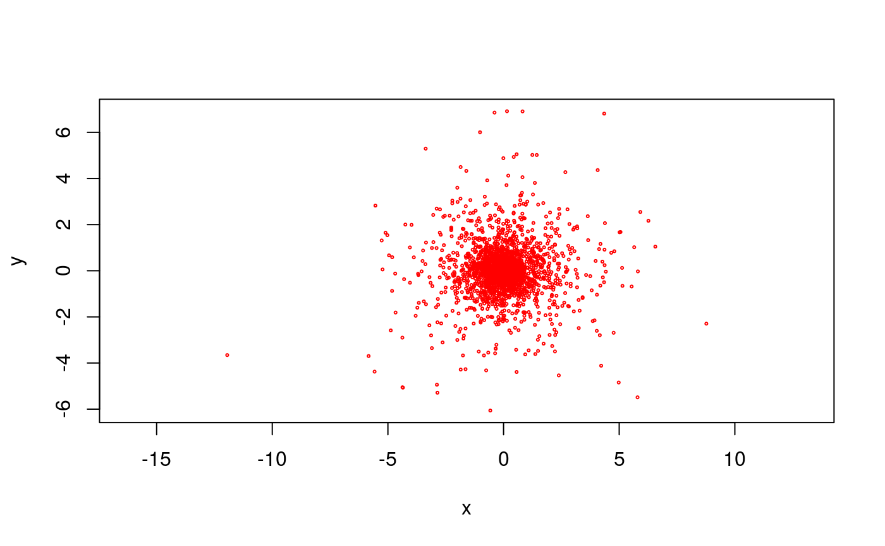
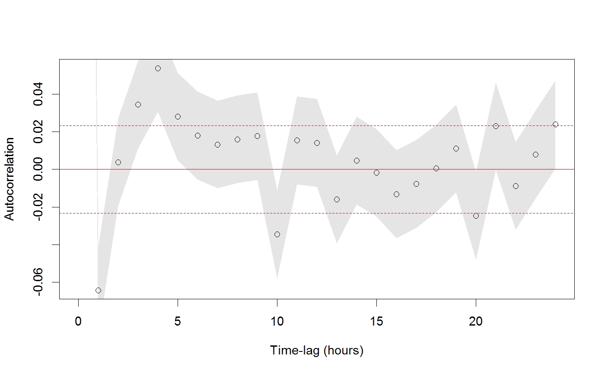

residuals.RdThese functions calculate the residuals of a CTMM or UERE calibration model, which should be standardized and IID if the model correctly specified.
A correlogram method is also provided to assess autocorrelation.
This function is analogous to acf, but can handle missing data and multiple dimensions.
Finally, mag calculates residual magnitudes, which is useful for comparing against potential covariates.
<!-- %residuals(object,...) -->
# S3 method for ctmm
residuals(object,data,...)
# S3 method for telemetry
residuals(object,CTMM=NULL,...)
correlogram(data,dt=NULL,fast=TRUE,res=1,axes=c("x","y"),trace=TRUE)
mag(x,...)
# S3 method for telemetry
mag(x,axes=c('x','y'),...)ctmm model object or telemetry data object for calculating residuals.
telemetry data object or data.frame with time column t and data columns axes.
ctmm model object. If NULL, the data is treated as (calibrated) calibration data.
Unused arguments.
Lag bin width. An ordered array will yield a progressive coarsening of the lags. Defaults to the median sampling interval.
Use the lag-weighted algorithm if FALSE or the FFT algorithm if TRUE. The slow algorithm outputs a progress bar.
Increase the discretization resolution for irregularly sampled data with res>1. Decreases bias at the cost of smoothness.
Array of axes for which to calculate residual correlogram or magnitudes.
Display a progress bar if fast=FALSE.
telemetry object from the output of residuals.
Given a telemetry dataset and ctmm model, residuals calculates the standardized residuals of the Kalman filter, which can be tested for independence. The residuals object can then be plotted with plot or fed into the correlogram method to test independence. Output of the correlogram can then be plotted as well, though zoom is much more useful.
When calculating correlograms, minimizing bias is more important than producing a overall smooth estimate. If fast=TRUE, then res needs to be large enough to resolve variability in the sampling interval (missing data is permitted). E.g., if the sampling interval is set to 15 minutes, but can be off by a minute or two, then res=15 is a good choice.
residuals return a residual object (class telemetry, but flagged as residual) and correlogram returns a correlogram object (class variogram, but flagged as an ACF).
C. H. Fleming, D. Sheldon, E. Gurarie, W. F. Fagan, S. LaPoint, J. M. Calabrese, ``Kálmán filters for continuous-time movement models'', Ecological Informatics, 40, 8-21 (2017) doi:10.1016/j.ecoinf.2017.04.008 .
If the sampling schedule is irregular, permitting gaps, then the correlogram may not look good even if the model is correctly specified. In this case the correlogram of the residuals should be compared to the correlogram of simulated residuals, using "data" simulated from the fit model and with the same sampling schedule.
# \donttest{
# Load package and data
library(ctmm)
data(buffalo)
Cilla <- buffalo$Cilla
# fit a model
GUESS <- ctmm.guess(Cilla,interactive=FALSE)
FIT <- ctmm.fit(Cilla,GUESS)
# calculate residuals
RES <- residuals(Cilla,FIT)
# scatter plot of residuals with 50%, 95%, and 99.9% quantiles
plot(RES,col.DF=NA,level.UD=c(.50,.95,0.999))

# calculate correlogram of residuals
# increase the res argument to account for sampling variability
ACF <- correlogram(RES,res=10)
# plot 4 day's worth of lags
plot(ACF[ACF$lag<=4 %#% 'day',],fraction=1)

# }